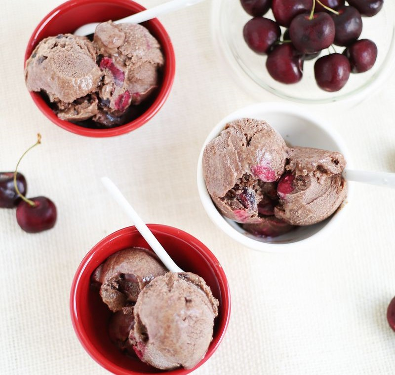

Chocolate Cherry Ice Cream
This homemade ice cream comes out thick and creamy -- but requires an ice cream maker to properly freeze and enjoy.
Ingredients:
- One and a half cups of heavy cream
- Half a cup of cherries, pitted and sliced
- Half a cup of sugar
- Six ounces of semi-sweet chocolate
- Half a cup of milk
Steps:
- In a blender, combine half the cherries and one cup of heavy cream, pulsing repeatedly
- In a double boiler saucepan, melt chocolate
- Once the chocolate is melted, slowly combine the remaining half a cup of cream into the chocolate, stirring constantly
- Once the chocolate mixture is well blended, slowly pour the chocolate into the blended cream cherry mixture, stirring constantly
- Prepare your ice cream maker
- Pour the mixture into ice cream maker according to manufacturer directions
- Allow the ice cream maker to freeze the ice cream.